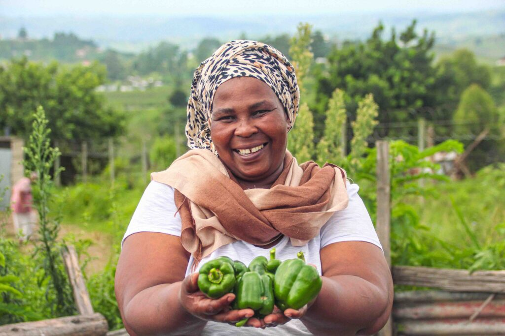

7,066
Children
A primary school's worth of children supported every year, across six communities.
Five interpretations of the same four impact stats. Scroll, compare, pick the one to ship to the live site's #impact section.
Our Impact
Children supported in 2024
Nutritious meals served yearly
Community partner organisations
Years of patient, multi-year partnership
Our Impact
Children supported in 2024 A primary school's worth of children, every year
Nutritious meals served yearly ~547 meals a day, across six communities
Partner organisations Long-term, unrestricted partnerships
Years of partnership Patient capital that doesn't ask for quick wins
Our Impact
Children
A primary school's worth of children supported every year, across six communities.
Meals
Roughly 547 nutritious meals every day, served across the network of partners.
Partners
Hand-picked community-based organisations, each given unrestricted multi-year funding.
Years
Two decades of patient partnership — long enough to actually change a community's trajectory.
Our Impact
Children supported in 2024
Nutritious meals yearly
Partner organisations
Years of patient partnership
Our Impact
Children
In 2024, Even Ground's partner organisations supported 7,066 children. That's about the population of a small primary school district, every year — across six rural and township communities in South Africa.

Meals
More than 200,000 nutritious meals are served each year across the partner network — about 547 a day. Many of these are the only consistent meal a child receives outside the home.

Partners
Six community-based organisations. Each chosen because they're the ones closest to a problem we want to help solve. Each given unrestricted, multi-year funding — and time to do the work right.

Years
Two decades of partnership. We've been supporting Thanda since they opened in 2008, Siyakwazi since 2018, BRAVE since 2019. Patient capital is the work.